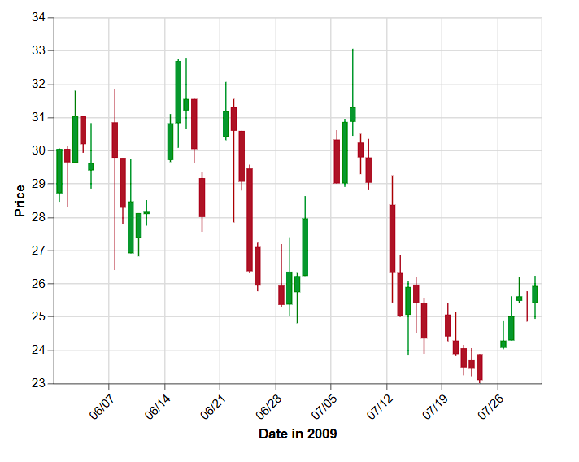

Homework 5
Exercise 2 — Visualization Gallery Analysis
(a) Graphic + link
Here is the chart I chose:
Candlestick Chart (Vega-Lite example)

(b) What marks are being used? What variables are mapped?
This chart uses rectangles and vertical lines.
- Rectangles show the opening and closing prices
- Vertical lines show the highest and lowest prices
- The x-axis represents time (date)
- The y-axis represents price
- Color shows direction: green means price increased, red means price decreased
(c) What is the main story of this graphic?
The main story of this graphic is how the price changes over time. It shows daily price movements and overall trends.
(d) What makes it a good graphic?
- It shows a lot of information in a compact way
- Color makes increases and decreases easy to see
- The axes and labels are clear
(e) What features could you implement in Vega-Lite?
I could implement bar and line marks, map date to the x-axis and price to the y-axis, use color to show changes, and add titles and labels.
(f) What features would be harder to implement?
Layering multiple marks to form candlesticks and applying conditional coloring based on open versus close price.